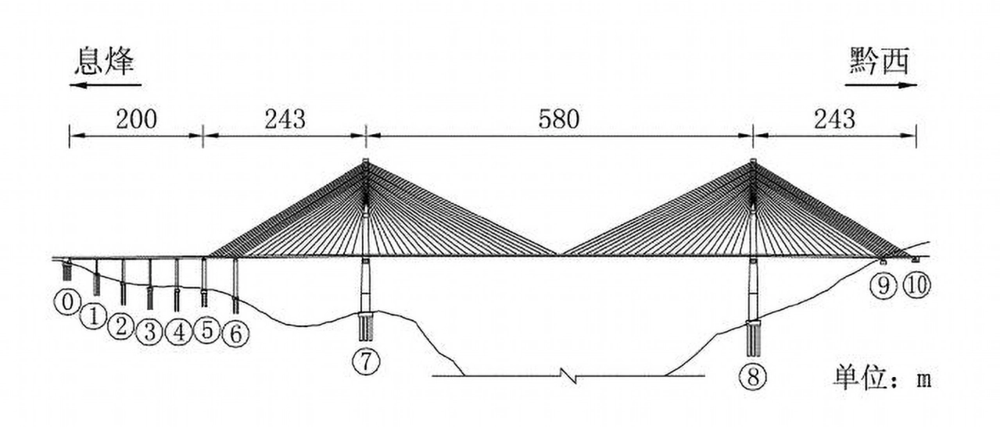

设计特点
六广河特大桥系预应力钢筋混凝土连续钢构T型桥，全长564.2米，主跨240米，桥高305米，桥墩高90米。在贵毕高等到级公路的众多桥梁中，六广河特大桥以其造型别致独领风韵。它与长437米的冷家寨大桥相接，呈弧形跨越几座山头，桥下是20对双圆柱钢混结构桥墩，似巨龙的脚。桥宽12米，南北走向后又是东西走向穿过两座隧道——九子岩隧道和高家岩隧道向毕节方向延伸而去。在材料使用上，六广河大桥主要使用了预应力钢筋混凝土。这种材料不仅具有较高的强度和刚度，还能够在长期使用中保持良好的性能，适合用于高桥建设。
